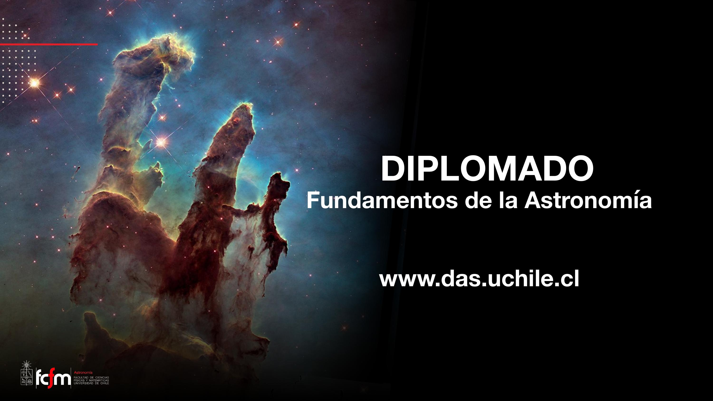
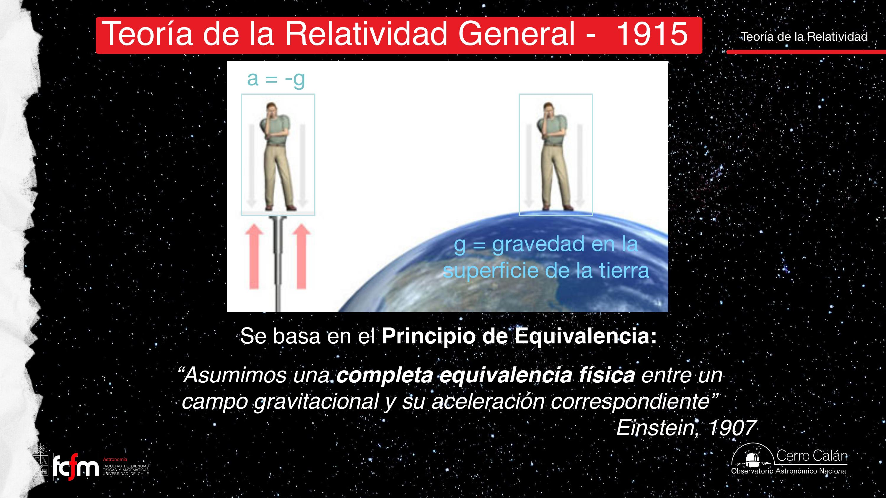
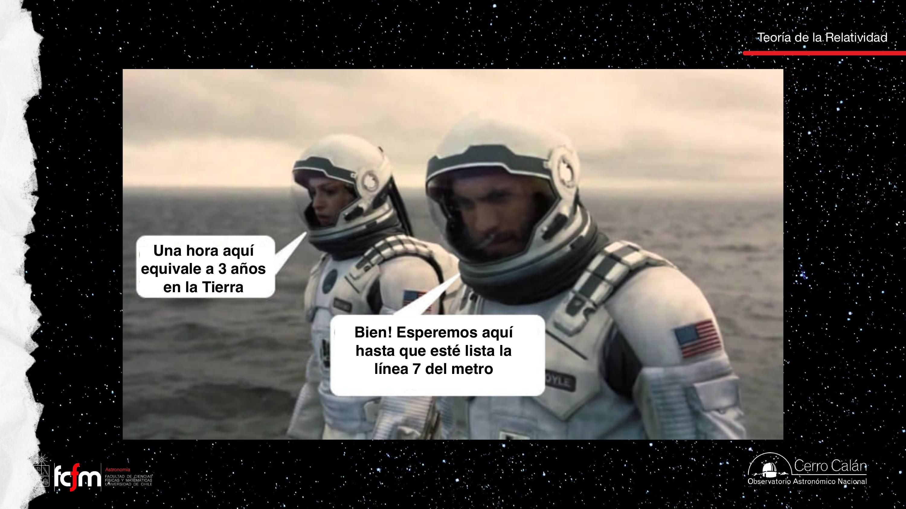
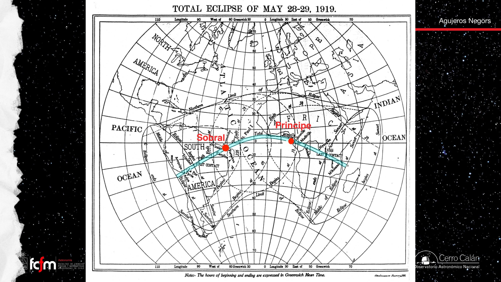
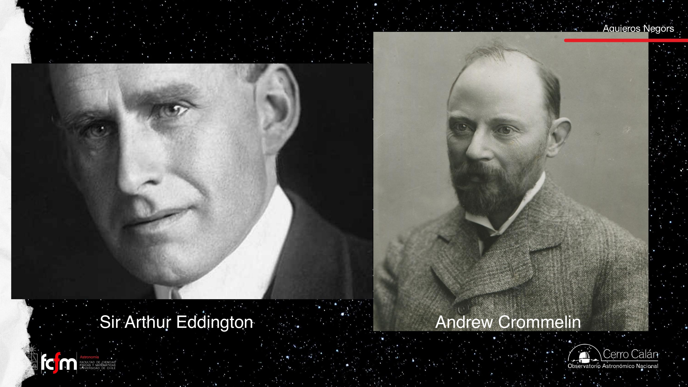
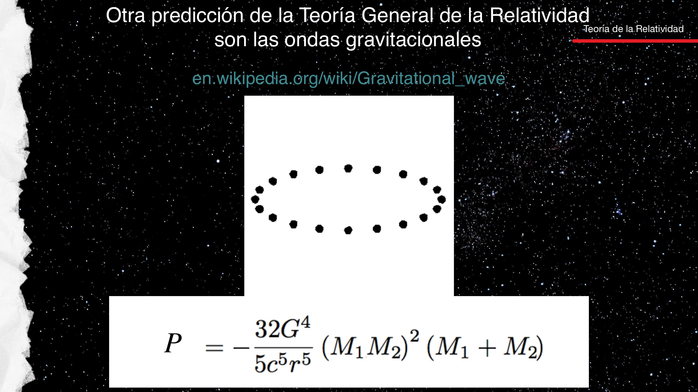

Del espacio-tiempo plano a las ondas gravitacionales
Einstein, relatividad especial y general, lentes gravitacionales y detección de ondas gravitacionales.
El Módulo III entra en régimen relativista: agujeros negros, núcleos activos y ondas gravitacionales. Esta clase es el andamiaje físico — postulados, predicciones e instrumentos de verificación.
Einstein y el año 1905
1905: fotoeléctrico, browniano, relatividad especial, . 1915: relatividad general (RG). La equivalencia masa–energía explicó el brillo estelar (fusión nuclear).

Velocidad relativa cotidiana
Perro en tren, metro que parte: la velocidad depende del observador. A escala galáctica sumamos órbitas anidadas. Esto es cinemática clásica, no relatividad especial.
Relatividad especial
Postulado central: c es constante en el vacío para todos los observadores inerciales (compatible con Michelson–Morley y con mediciones astronómicas en distintas épocas del año).
Experimento del reloj de luz: en el vagón, ida y vuelta vertical (distancia 2L). Para quien ve el tren moverse, la luz recorre hipotenusa → trayectoria más larga. Con la misma c, el tiempo medido en tierra debe ser mayor: dilatación temporal. También aparece contracción de longitudes en la dirección del movimiento.
Piensa en sincronizar dos relojes en redes distribuidas: si asumes simultaneidad absoluta pero las señales viajan a c finita, cometes errores sistemáticos. La SR formaliza ese error en marcos que se mueven uno respecto al otro.

Principio de equivalencia
Campo gravitatorio uniforme ≡ aceleración. Caída libre ≡ ingravidez (astronautas en órbita). Distinto del principio de inercia (Galileo/Newton).
Relatividad general
Materia y energía curvan el espacio-tiempo (4D). Los cuerpos siguen geodésicas. Metáfora de la malla 2D es limitada.

Cerca de masa: relojes más lentos; luz que escapa se enrojece (redshift gravitacional).
GPS y efectos medibles
Interestelar: cerca del agujero negro el tiempo es mucho más lento. GPS requiere corrección relativista.
Corrección neta ~38–45 microsegundos/día (no milisegundos; posible lapsus en transcripción).
Mercurio y eclipse 1919
Perihelio de Mercurio: +43″/siglo por RG. Eclipse 1919: deflexión de luz estelar; mayor desplazamiento más cerca del Sol. Sobral y Príncipe; Crommelin y Eddington.


Lentes gravitacionales
Cúmulos masivos (p. ej. Abell 2218) distorsionan luz de fondo → arcos, anillos de Einstein. Materia oscura domina el potencial. Supernovas lenteadas con retardos temporales entre imágenes.

Ondas gravitacionales y LIGO
Las ondas gravitacionales (GW) son perturbaciones del espacio-tiempo que se propagan a c. Se generan cuando distribuciones de masa aceleran de forma no simétrica (radiación cuadrupolar). La amplitud típica en LIGO es ~10−21 (cambio relativo de longitud del orden del tamaño atómico en brazos de 4 km).
- Analogía EM: cargas aceleradas → ondas electromagnéticas; masas aceleradas → GW. La gravedad es muchísimo más débil → señales minúsculas.
- Hulse–Taylor (PSR B1913+16): el período orbital de un binario de pulsares decrece ~76 μs/año, consistente con pérdida de energía por GW → Nobel 1993 (detección indirecta).
- LIGO (14 sep 2015): GW150914, fusión de dos BH ~30 M☉ a ~1,3 Gpc. Virgo y KAGRA se sumaron después.
El detector es un interferómetro Michelson con brazos perpendiculares: la GW modula ligeramente la diferencia de camino óptico. Se exige coincidencia entre observatorios separados (Hanford WA, Livingston LA) para descartar ruido local. La forma de la señal: chirp (frecuencia creciente al acercarse), pico de fusión, ringdown (modos cuasinormales del BH final).
Implicancia astrofísica: apareció una población de BH estelares más masiva que la conocida solo por rayos X. Las kilonovas (fusión de estrellas de neutrones, GW170817) unen GW y luz, confirmando producción de elementos pesados por r-proceso.


Clase 2: Schwarzschild, horizonte y agujeros negros observables.
| Concepto | Resumen |
|---|---|
| SR | c invariante; tiempo y longitud relativos |
| RG | Curvatura por masa-energía |
| Redshift grav. | Luz pierde energía al escapar |
| Lente grav. | Masa magnifica fondo |
| GW / LIGO | Astronomía de ondas a c; fusiones compactas |
Exámenes de práctica
10 exámenes de 5 preguntas (3 alternativas autocorregibles + 2 escritas).
- Examen 01Relatividad especial
- Examen 02Principio equivalencia
- Examen 03Efectos gravitacionales
- Examen 04Evidencia histórica
- Examen 05Lentes gravitacionales
- Examen 06Ondas gravitacionales I
- Examen 07Hulse–Taylor y LIGO
- Examen 08Poblaciones de fusiones
- Examen 09Tipos de ondas
- Examen 10Integrador clase 1